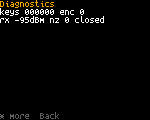

Troubleshooting
Installing
The web installer's "Select the Symptom" step covers most of these on screen. The rows below also apply to the rfoundry command line.
| Problem | Cause and fix |
|---|---|
| "no radio bootloader found" | The radio isn't in its bootloader, or the cable is charge-only. Turn the radio off. Hold the radio's bootloader keys (Radio reference, your radio's "Installing" section) and turn it on; the screen stays dark. Try another USB port or cable. Windows: the bootloader's driver may be missing (steps) |
| "access denied" | Linux: add the udev rule rfoundry prints, then unplug and replug. Windows: install the bootloader's driver with Zadig (steps) |
| "the bootloader is busy" | Another program has it open (a CPS, a virtual machine with USB passthrough). Close it and replug |
| The web installer says the radio's port or USB connection is in use | Close the other program or browser tab that uses the radio (a CPS, qdmr, a hotspot host, a second installer tab), then try again. Windows: the bootloader's driver (steps). Linux: your user needs access to the device |
| The web installer can't use a firmware file | It says why: another radio's file, not the manufacturer's file, a version without a recipe yet, a damaged download. What each one means |
| The radio stays in update mode after an interrupted backup or install, and the power switch does nothing | Choose Radio Stuck in Update Mode in the web installer, pick the radio (and the cable, if it asks), and it restarts the radio into normal mode or says how (details). If the loader does not answer, take the battery out for a few seconds |
| The screen stays dark after flashing | The radio is still in its bootloader. Turn it off and on again without holding any key |
| A white, backlit screen and a solid red LED at every power-on, and the radio never starts | The radio is stuck in its factory update mode because the application is missing or incomplete. Nothing else is damaged. Install again with the web installer (Radio reference, your radio's "Installing" section says whether this applies) |
| "Preparing the radio failed", or the radio does not respond on its programming cable | Push the cable plug fully in and try again, or try a cable with an FTDI, CP210x or PL2303 chip. Slow cable mode is always on now: there is no separate button. If it still fails, select Use Factory Update Mode: hold the radio's update mode keys while you turn it on (Radio reference, your radio's "Installing" section). It needs the stock firmware file or a program memory backup for the codec (Installing) |
| The web installer reports "Cable Problem Detected" | The programming cable itself is at fault, not the radio: it sends data nobody asked for, it dropped off the computer's USB, its adapter stopped responding, or the radio receives nothing through it. Unplug it from the computer, wait a few seconds, plug it straight into the computer (no hub), push the plug fully into the radio and select Try Again. If it returns, replace the cable with a better one, preferably one with an FTDI chip (Installing) |
| Flashing stopped half way | Put the radio in its bootloader and run the same command again. rfoundry never erases the bootloader |
Command line installs (advanced)
The web installer shows these on screen and walks through the fixes. They apply when you install with rfoundry,
also from the installer's manual install kit.
| Problem | Cause and fix |
|---|---|
| "unknown stock file ... not a supported codec source" | rfoundry knows the stock files by SHA-256. Download the exact file Installing names for your radio |
| "... is an official Baofeng/TYT firmware file, not a RadioFoundry image" | You gave the stock file as the image. Give the RadioFoundry image (or --release) and the stock file with --stock |
| "rfoundry can't tell whether the radio holds the codec" | Start the radio with RadioFoundry and run rfoundry probe, or give --stock so rfoundry writes the codec |
| "no libusb found" (running from source) | Install libusb (brew install libusb, or apt install libusb-1.0-0), or use the rfoundry executable, which carries it |
Everyday use
| Problem | Cause and fix |
|---|---|
| DMR calls show but there is no audio, "No codec: voice off" | The radio has no usable codec. See Installing, no codec |
| A DMR call shows "Other TG: not played" | Its talkgroup isn't the talk target, in the listen list or the reply target. Press Monitor (digital monitor), or add the talkgroup to the channel's RX group list in qdmr. A parrot's playback of your own call (your own ID as the source) plays like any other call |
| "Encrypted: not played" | The call uses basic privacy and the radio has no matching key, or stronger encryption the radio can't play |
| "No DMR ID in codeplug" when transmitting | Write a codeplug with your DMR ID (Programming the radio) |
| "Channel busy" | Someone is talking on the timeslot. Wait for the call to end |
| "No repeater answered" | The repeater didn't respond. Check the frequency, the color code, the timeslot and your distance to the repeater |
| No audio on FM | The squelch is closed or the channel needs a tone. Hold Monitor to open the squelch. Check the tone with *, 3 |
| A key does nothing and the screen says "Keys locked" | Hold * to unlock. Check Settings > Key lock > Auto lock |
| "Not used here" | That key has no function on this screen |
| "...: not in this build" | The feature is switched off in this build, or isn't built yet |
| The radio is stuck on the hotspot screen | A host has the serial port open. Press OK, or stop the host program. Turn Settings > Connections > Hotspot allowed off to prevent it |
| Zone or channel changed by itself | A scan is running (SCAN in the status line). Press Back on Home |
| qdmr, rfoundry or a hotspot host doesn't find the radio's serial port | USB is in network mode. Switch back in Tools > USB network, or turn off Settings > Connections > USB network at start and restart. The debug link and MMDVM also answer on UDP port 3334 (USB network) |
| In network mode the computer gets no address | The radio goes back to serial when the computer doesn't set the adapter up within 10 s. Check that the computer shows a new network adapter, then switch again |
Settings are not kept
If settings go back to their defaults after a restart, and qdmr writes fail, the radio has found another firmware's data in the flash area where RadioFoundry keeps its settings. RadioFoundry doesn't erase it, so you don't lose data by accident. The radio runs on the defaults in memory.
To give the area to RadioFoundry (developers, over the debug link):
tools/rfoundry_debug.py storage info # shows region=foreign
tools/rfoundry_debug.py storage claim --out ~/rfoundry-backup # saves a copy of the area, then erases it for RadioFoundry
storage claim saves the area's old contents and the calibration copy to files in the --out directory before it
erases anything. It refuses to save inside a git work tree.
Some settings are "not kept" by design today: see the Status column in Settings.
Diagnostics
OK, 6, 7 (Tools > Diagnostics) shows raw readings for bench checks: keys, receiver levels, the DMR modem's state and counters, battery, the board's own lines. * pages through them. Back leaves.

Developers get the same and more over USB with tools/rfoundry_debug.py diag and tools/rfoundry_debug.py view.
Getting help
Ask in the RadioFoundry community group on Facebook: other users and the developers answer questions there, help with installs and post news. The web installer links the group and the GitHub issues under every error message.
Reporting a problem
Open an issue in the project repository. Include the firmware version (Settings > My radio > About), the radio
model, what you did, what you expected and what happened. A screenshot helps: tools/rfoundry_debug.py screenshot -o screen.png saves one over USB.
If the radio restarted by itself, look at Settings > Advanced > Crash log (Settings)
and copy its lines into the issue. Developers get the whole record with tools/rfoundry_debug.py crash.
For gaps in received digital speech, include the mode, signal strength and whether they occur throughout the call or only at its beginning or end.